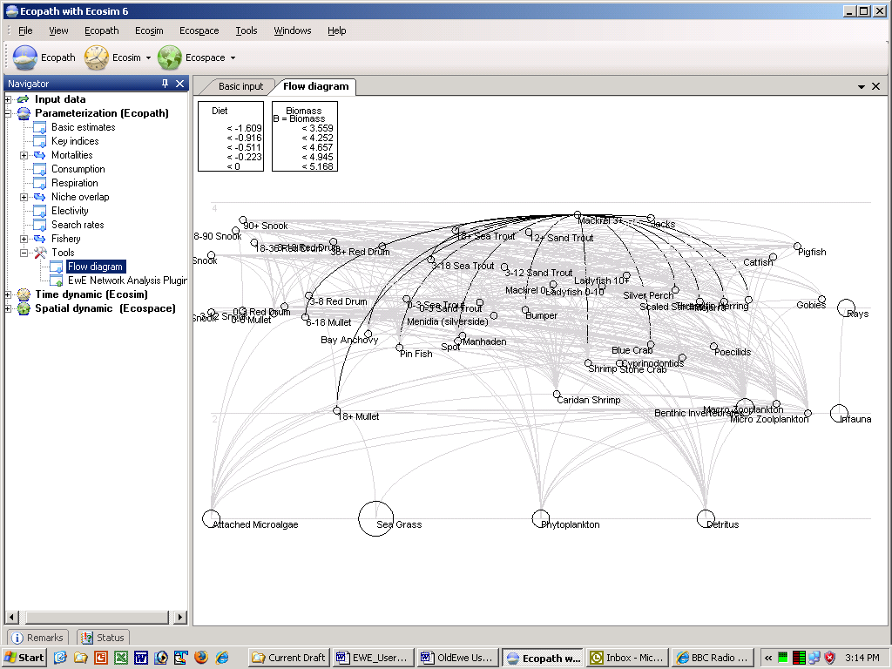

The traditional method of representing trophic flow in ecosystem models, usually by scattering interconnected boxes across a page, both under-utilizes the potential descriptive and explanatory power of graphical representations and makes it difficult to compare different system representations. Often, trophic models are drawn such that the boxes representing organisms low in the food web are placed in the lower part of the graph, along with the plants, while the boxes representing organisms high in the food web are put higher up.
In the flow chart incorporated in Ecopath, explicit use is made of this mode of graphing, i.e., to plot the boxes representing the organisms of an ecosystem such that the horizontal axis of symmetry of each box is aligned with the (functional) trophic level of the box in question. Using trophic level as the Y-axis is not sufficient to define the relative position of the elements of a model, and two approaches may be considered for ordering the boxes along the X-axis:
(i) arranging the boxes such that they do not overlap, and/or with emphasis on some symmetry, such that the resulting graph is aesthetically pleasing, or,
(ii) arranging the boxes such that the arrows linking the boxes cross each other as little as possible, hence maximizing clarity of the graph.
You might consider (i) and (ii) when constructing flow charts using the flow diagram in this version of Ecopath. The size of each (round) box is proportional to the biomass it represents. This trick is particularly useful in helping to visualize the relative role and impact of the organisms in each box.
Another rule of construction was incorporated in the flow chart design of Ecopath. Flows entering a box do this on the lower half of the box, while flows exiting a box do it from the upper half. Flows that enter a box can be combined, while flows that leave a box cannot branch, but can be merged with flows exiting other boxes. This ensures compatibility with electronic hardware design, and more importantly, it simplifies the flow chart.
EwE6 automatically builds a trophic flow diagram. Right click on the Flow diagram form and select Settings to set the color of the nodes, colors, width and types of lines, the shape of the nodes (square or circular) and whether the nodes are to be scaled or not.
Hover your mouse over a node to see its connections. Trophic levels are shown in the background.

Figure 7.3. Flow diagram